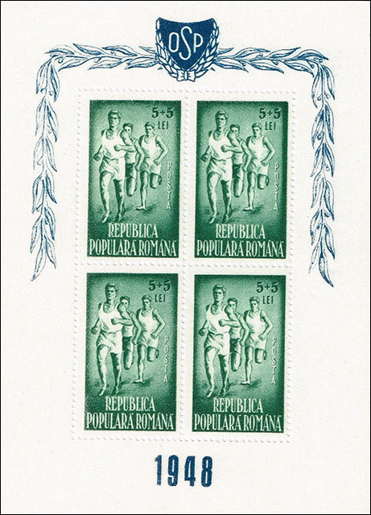
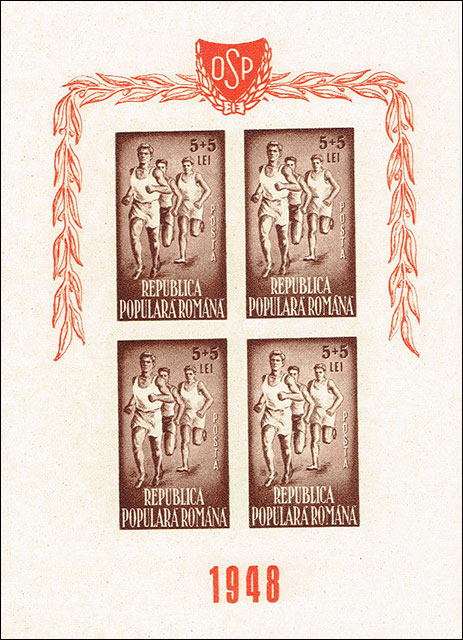
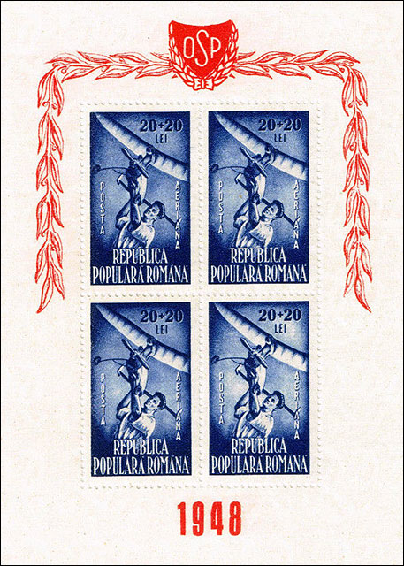
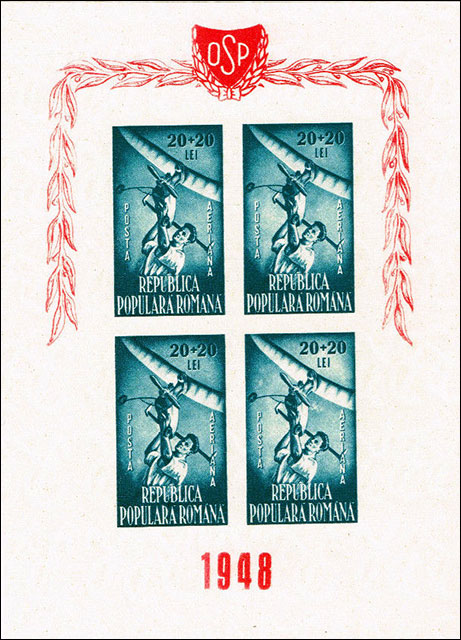
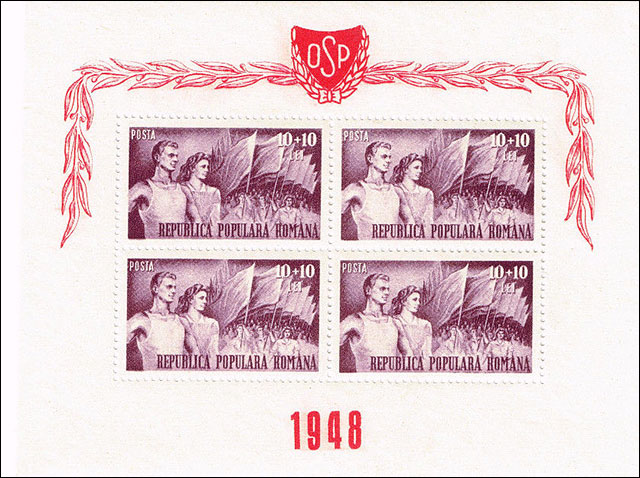
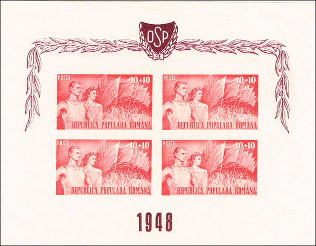
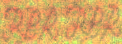

| Created: Nov. 30, 2018. Revised: June 8, 2020
. Copyright © 2020 by Victor Manta, USA / Switzerland All rights reserved worldwide. |
|
COLIŢELE OSP - 1948
UTILIZATE CA MIJLOACE DE PROPAGANDĂ COMUNISTĂ
Victor Manta, PWO
Introducere
Am început să colecţionez timbre româneşti de la o vârstă timpurie, o vreme la care seria din titlu era deja veche de uşor peste zece ani. Am văzut această serie de şase timbre de mai multe ori, la colecţionari diferiţi, dar am avut prilejul să văd întregul set de şase coliţe doar de vreo două ori în peste 25 de ani.
Deşi coliţele erau destul de atractive, acestea erau mult prea scumpe pentru buzunarul meu de elev. Mai târziu am trecut la colecţionarea de timbre tematice străine, care păreau mai interesante şi erau imprimate mai bine, aşa că am uitat de coliţele OSP. Abia recent interesul meu pentru ele a crescut din nou, din motivele prezentate în acest articol.

Despre OSP şi seria de timbre asociată
Orice colecţionar de timbre, cu experiență în timbrele româneşti cunoaște OSP (Organizația Sportului Popular), deoarece unele dintre timbrele emise în folosul acesteia sunt mai degrabă rare, dar nu toată lumea ştie ce reprezinta această organizaţie în trecutul deja îndepărtat. Reproduc mai jos ceea ce am putut găsi pe Web:
„Prin constituirea Organizaţiei Sportului Popular mişcarea sportivă de masă era organizată şi subordonată politicii centrale a P. C. R. Se puneau bazele unei organizaţii aparent inofensive, dar în spatele dezvoltării educaţiei fizice şi a sportului era interesul comuniştilor de a încadra societatea în cât mai multe organizaţii de masă, menite a subordona individul statului totalitar. Controlul social, propaganda şi „omul nou” au devenit astfel cuvinte-cheie în programul de „democratizare” a sportului românesc din anii 1945 – 1946”. Sursa.
Am găsit de asemenea că numai o zi a trecut între instaurarea „primului guvern democratic“, numit guvernul Petru Groza, şi începutul sovietizării, care a fost bine pregătită în prealabil. Deoarece noua organizaţie a fost gândită ca un instrument de propagandă pentru instaurarea comunismului în România, la 1 septembrie 1946 serviciul poştal român a emis un set de şapte valori (Mi. 1000 - 1006) şi o mini-coală compusă din 4 coliţe, care erau separabile cu foarfeca (Mi. Bloc 33).
Noua organizaţie sportivă avea nevoie de fonduri, motiv pentru care timbrele, precum şi coliţele, erau prevăzute cu suprataxe foarte mari, ca de exemplu pentru OSP-1: Lei 160 + 1340, 300 + 1200, 300 + 1000.O nouă serie, imprimată în coli de 9 timbre, însoţită de o altă coliţă, a urmat în anul 1946, Scott B 279 - B 289.
Cu doi ani mai târziu, în 1948, a fost pusă în vânzare o nouă şi ultimă serie de 6 timbre, în coliţe de tipar de patru timbre, Michel 1171 - 1176. Aceste coliţe, reproduse pe parcursul acestui articol, reprezintă obiectul principal al interesului autorului.

Raritatea coliţelor
Există mai multe motive pentru care aceste coliţe sunt relativ rare:
- Ele au fost emise la trei ani după încheierea Celui de al 2-lea război mondial, un război care a lăsat în urma sa o Românie devastată. După război, chiar dacă a devenit înainte un aliat al URSS şi a luptat împotriva Germaniei naziste, România a fost ocupată (între 1944 și 1958) de trupele Uniunii Sovietice. Ocupantul a supt mult din resursele țării, considerate de el drept compensaţii de război. Prin urmare filateliştii deveniseră prea săraci pentru a cumpăra timbre, atunci când le lipseau multe lucruri mai importante (cum ar fi hrana).
- Timbrele erau scumpe, afişând o suprataxă de 100% fiecare.

- Timbrele din serii au fost extrase din coliţele de tipar, pentru a fi vândute independent, la un sfert din preţul coliţelor, ceea ce evident le-a făcut mai accesibile. Timbrele separate au avut putere de francare.
- Subiectul prezentat pe ele este unul atractiv şi a fost popular în special în rândul tinerilor.
Ca urmare, doar un număr mic de coliţe a supravieţuit, ceea ce le-a făcut foarte repede greu de găsit. Este dificil de estimat cât de multe coliţe întregi au scăpat întregi, dar numărul lor este cu siguranţă foarte limitat.

Preţurile actuale de catalog şi pe eBay ale coliţelor
Preţurile pentru timbrele neuzate fără urme de şarniere sunt, după cum urmează :
- Michel 2017 - 2018, 1171 - 1176, în coliţe, preţ în Euro 400, convertiţi în USD: 450.
- Yvert & Tellier, preţul coliţelor în Euro, convertit în USD : 400.
- Scott 2009, B 241 - B 424, CB 20 - CB 21: 48,50 USD pentru o serie. Nu există prețuri separate pentru coliţe, care ar trebui să aibă o valoare minimă de USD 200.
Preţurile "Buy Now" pe eBay variază, la momentul scrierii acestui articol oscilând între 247 USD şi 495 USD ( ! ?). Îmi amintesc că acum câţiva ani un set complet de coliţe a fost vândut în cadrul unei licitaţii pe eBay cu USD 217.

Imagini şi filigran
Setul complet este format din trei coliţe dantelate şi trei nedantelate. Fiecare coliţă conţine 4 timbre. Timbrele nedantelate au acelaşi design ca şi cele dantelate, dar culorile lor au fost modificate.
Doar unul din timbre arata un sport întrucâtva popular în România, cel cu atleţi ce aleargă. Cel de-al doilea arată o imagine din aeromodelism, un sport mai puţin popular, iar al treilea o paradă sportivă, un timbru cu evidente scopuri propagandistice. Prin urmare, întregul nu este o emisiune banală, dedicată unor sporturi populare, ci un instrument de propagandă al regimului comunist proaspăt instalat, regim care va domni în România timp de 45 de ani şi va fi răsturnat de o revoltă populară abia în decembrie 1989.
Filigranul: Scott # 289, " RPR Multiple ". RPR reprezintă abrevierea noului nume al țării, Republica Populară Română. Primele şi ultimele 2 timbre se pot găsi cu filigran rotit cu 180 de grade, iar cele din mijloc se găsesc şi cu filigran "în oglindă".

În ciuda circumstanţelor dramatice legate de apariţia lor, m-am bucurat să le revăd la o depărtare în timp de 70 de ani după ce au fost emise.
| Created: Nov. 30, 2018. Revised: June 8, 2020
. Copyright © 2020 by Victor Manta, USA / Switzerland All rights reserved worldwide. |
|